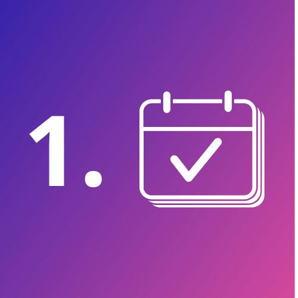
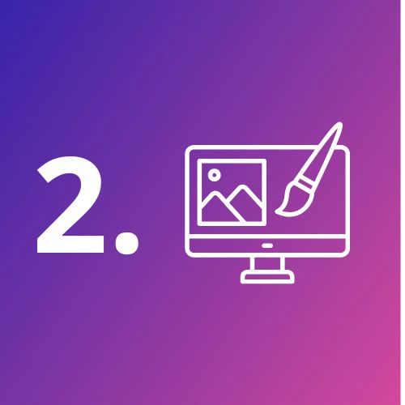
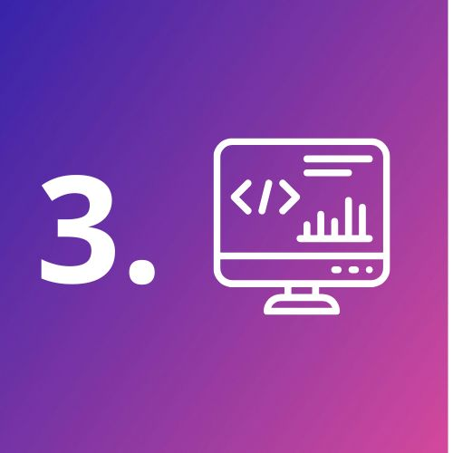
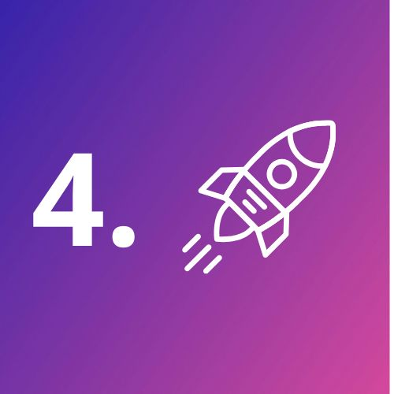

À propos
Je n’ai pas commencé par le code. Avant de devenir développeuse, j’accompagnais des professionnels de santé en partant toujours de leurs besoins réels.
Aujourd’hui, j’aide les artisans, indépendants et petites entreprises à créer des sites web clairs, utiles et faciles à prendre en main.
Je suis basée à Huisseau-sur-Cosson (41).
Mon approche est simple : comprendre votre activité avant de proposer une solution.Parce qu’un bon site n’est pas celui qui en fait le plus, mais celui qui est vraiment utile.
Pas de jargon, pas de complexité inutile. Je vous explique chaque étape pour que vous restiez autonome avec votre site.
Mon objectif : créer un site qui vous ressemble et qui aide vos clients à vous comprendre rapidement.
Je vous accompagne de l’idée jusqu’à la mise en ligne… et même après, si vous en avez besoin.
Services
Je propose une gamme complète de services de développement pour répondre à vos besoins spécifiques.
-
Création de sites & applications web
Conception sur mesure d'un site simple et clair ou d'un outil web adapté pour simplifier votre quotidien
-
Intégration de maquettes (Figma)
Intégration fidèle de vos maquettes, responsive et accessible, pour un rendu professionnel
-
Optimisation mobile
Navigation fluide et ergonomique sur tous les écrans, pour une expérience mobile optimale
-
Performance et optimisation SEO
Sites rapides, bien référencés et conçus pour une expérience utilisateur efficace et durable
-
Refonte de sites web
Modernisation complète de votre site pour pour le rendre plus clair, plus rapide et plus efficace.
-
Accessibilité web
Conformité WCAG, navigation claire et inclusive pour tous les utilisateurs
-
Maintenance et évolution
Suivi régulier, mises à jour et améliorations continues pour un site à jour, sécurisé et évolutif dans le temps
Notre processus de travail pour un accompagnement simple, de l’idée à la mise en ligne
-

RDV initial
Nous échangeons sur vos objectifs pour définir un site clair, efficace et aligné avec votre activité.
-

Conception des maquettes
Vous visualisez votre futur site avant le développement afin de valider l’ergonomie et le design en toute sérénité.
-

Développement & intégration
Votre site est développé avec un code propre, rapide et accessible, optimisé pour le référencement et les performances. Le développement démarre après validation des maquettes.
-

Lancement & maintenance
Nous mettons votre site en ligne et vous accompagnons après le lancement pour assurer sa stabilité et son évolution.